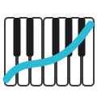

The chosen mark is B2: the letter P, its stem a vertical cluster and its bowl made of notes, in the three instrument colours.
Final
pantonal
pantonal
First concepts
A · TwelveTwelve notes in a circle with a drawn line.B · Piano-roll PThe letter P built from piano-roll notes, with a playhead.C · GlissandoA glide, a cluster and a note over twelve pitch lines.

D · OctaveThe twelve keys of an octave with a drawn line.
Variations on B
B1 · RefinedInk stem, coloured bowl, faint playhead.B2 · Cluster stem (chosen)A vertical cluster as the stem, notes for the bowl.B3 · PlayingB1 with a yellow playhead.B4 · BoldFewer, thicker bars for small sizes.